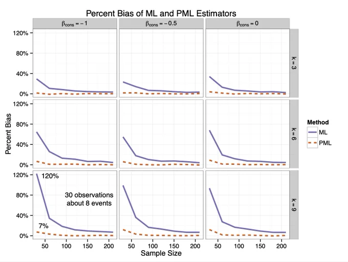
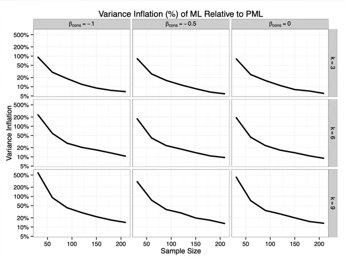
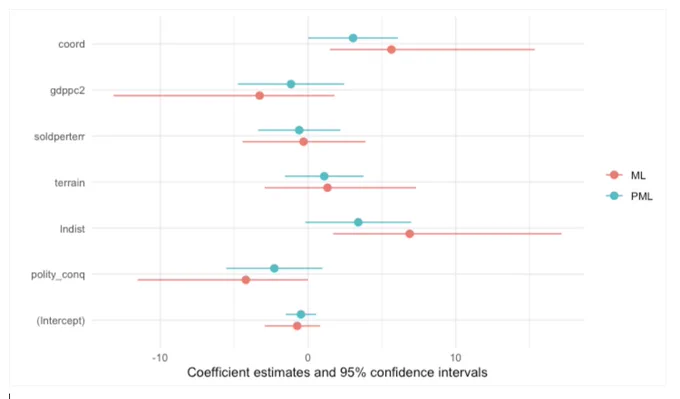

Regularized
Misc
- Regularized Logistic Regression is most necessary when the number of candidate predictors is large in relationship to the effective sample size 3np(1−p) where p is the proportion of Y=1 Harrell
- If using sparse matrix, then you don’t need to normalize predictors
- Preprocessing
- Standardize numerics
- Dummy or
factorcategoricals - Remove NAs,
na.omit
- Packages
- {glmnet} - handles families: Gaussian, binomial, Poisson, probit, quasi-poisson, and negative binomial GLMs, along with a few other special cases: the Cox model, multinomial regression, and multi-response Gaussian.
- In {{sklearn}} (see Model building, sklearn >> Algorithms >> Stochaistic Gradient Descent (SGD)), the hyperparameters are different than in R
- lambda (R) is alpha (py)
- alpha (R) is 1 - L1_ratio (py)
- {SLOPE} pkg - lasso regression that handles correlated predictors by clustering them
- Variable Selection
- For Inference, only Adaptive LASSO is capable of handling block and time series dependence structures in data
- See A Critical Review of LASSO and Its Derivatives for Variable Selection Under Dependence Among Covariates
- “We found that one version of the adaptive LASSO of Zou (2006) (AdapL.1se) and the distance correlation algorithm of Febrero-Bande et al. (2019) (DC.VS) are the only ones quite competent in all these scenarios, regarding to different types of dependence.”
- There’s a deeper description of the model in the supplemental materials of the paper. I think the “.1se” means it’s using the lambda.1se from cv.
- lambda.1se : largest value of λ such that error is within 1 standard error of the cross-validated errors for lambda.min.
- see lambda.min, lambda.1se and Cross Validation in Lasso : Binomial Response for code to access this value.
- lambda.1se : largest value of λ such that error is within 1 standard error of the cross-validated errors for lambda.min.
- Re the distance correlation algorithm (it’s a feature selection alg used in this paper as benchmark vs LASSO variants)
- “the distance correlation algorithm for variable selection (DC.VS) of Febrero-Bande et al. (2019). This makes use of the correlation distance (Székely et al., 2007; Szekely & Rizzo, 2017) to implement an iterative procedure (forward) deciding in each step which covariate enters the regression model.”
- Starting from the null model, the distance correlation function, dcor.xy, in {fda.usc} is used to choose the next covariate
- guessing you want large distances and not sure what the stopping criteria is
- algorithm discussed in this paper, Variable selection in Functional Additive Regression Models
- Harrell is skeptical. “I’d be surprised if the probability that adaptive lasso selects the”right” variables is more than 0.1 for N < 500,000.”
- See A Critical Review of LASSO and Its Derivatives for Variable Selection Under Dependence Among Covariates
- For Inference, only Adaptive LASSO is capable of handling block and time series dependence structures in data
Concepts
- Shrinking effect estimates turns out to always be best
- OLS is the Best Linear Unbiased Estimator (BLUE), but being unbiased means the variance of the estimated effects is large from sample to sample and therefore outcome variable predictions using OLS don’t generalize well.
- If you predicted y using the sample mean times some coefficient, it’s always(?) the case that you’ll have a better generalization error with a coefficient less than 1 (shrinkage).
- Regularized Regression vs OLS
- As N ↑, standard errors ↓
- regularized regression and OLS regression produce similar predictions and coefficient estimates.
- As the number of covariates ↑ (relative to the sample size), variance of estimates ↑
- regularized regression and OLS regression produce much different predictions and coefficient estimates
- Therefore OLS predictions are usually fine in a low dimension world (not usually the case)
- As N ↑, standard errors ↓
Ridge
- The regularization reduces the influence of correlated variables on the model because the weight is shared between the two predictive variables, so neither alone would have strong weights. This is unlike Lasso which just drops one of the variables (which one gets dropped isn’t consistent).
- Linear transformations in the design matrix will affect the predictions made by ridge regression.
Lasso
- When lasso drops a variable, it doesn’t mean that the variable wasn’t important.
- The variable, x1, could’ve been correlated with another variable, x2, and lasso happens to drop x1 because in this sample, x2, predicted the outcome just a tad better.
Adaptive LASSO
.png)
- Purple dot indicates that it’s a weighted (wj) version of LASSO
- Green checkmark indicates it’s optimization is a convex problem
- Better Selection, Bias Reduction are attributes that it has that are better than standard LASSO
- Weighted versions of the LASSO attach the particular importance of each covariate for a suitable selection of the weights. Joint with iteration, this modification allows for a reduction of the bias.
- Zhou (2006) say that you should choose your weights so the adaptive Lasso estimates have the Oracle Property:
- You will always identify the set of nonzero coefficients…when the sample size is infinite
- The estimates are unbiased, normally distributed, and the correct variance (Zhou (2006) has the technical definition)…when the sample size is infinite.
- To have these properties, wj = 1 / |βj_hat|γ, where γ > 0 and βj_hat is an unbiased estimate of the true parameter, β
- Generally, people choose the Ordinary Least Squares (OLS) estimate of β because it will be unbiased. Ridge regression produces coefficient estimates that are biased, so you cannot guarantee the Oracle Property holds.
- In practice, this probably doesn’t matter. The Oracle Property is an asymptotic guarantee (when n→∞), so it doesn’t necessary apply to your data with a finite number of observations. There may be scenarios where using Ridge estimates for weights performs really well. Zhou (2006) recommends using Ridge regression over OLS when your variables are highly correlated.
- Generally, people choose the Ordinary Least Squares (OLS) estimate of β because it will be unbiased. Ridge regression produces coefficient estimates that are biased, so you cannot guarantee the Oracle Property holds.
- Zhou (2006) say that you should choose your weights so the adaptive Lasso estimates have the Oracle Property:
- See Adaptive LASSO for examples with a continuous, binary, and multinomial outcome
Firth’s Estimator
Penalized Logistic Regression estimator
For sample sizes less than around n = 1000 or sparse data, using Firth Estimator is recommended
Misc
- Notes from
- Packages
- Invariant to linear transformations of the design matrix (i.e. predictor variables) unlike Ridge Regression
- While the standard Firth correction leads to shrinkage in all parameters, including the intercept, and hence produces predictions which are biased towards 0.5, FLIC and FLAC are able to exclude the intercept from shrinkage while maintaining the desirable properties of the Firth correction and ensure that the sum of the predicted probabilities equals the number of events.
Penalized Likelihood
\[ L^*(\beta\;|\;y) = L(\beta\;|\;y)\;|I(\beta)|^{\frac{1}{2}} \]
Equivalent to penalization of the log-likelihood by the Jeffreys prior
\(I(\beta)\) is the Fisher information matrix, i. e. minus the second derivative of the log likelihood
Maximum Likelihood vs Firth’s Correction
Bias
Variance
Coefficient and CI bar comparison on a small dataset (n = 35, k = 7)

Limitations
- Relies on maximum likelihood estimation, which can be sensitive to datasets with large random sampling variation. In such cases, Ridge Regression may be a better choice as it provides some shrinkage and can stabilize the estimates by pulling them towards the observed event rate.
- Less effective than ridge regression in datasets with highly correlated covariates
- For the Firth Estimator, the Wald Test can perform poorly in data sets with extremely rare events.